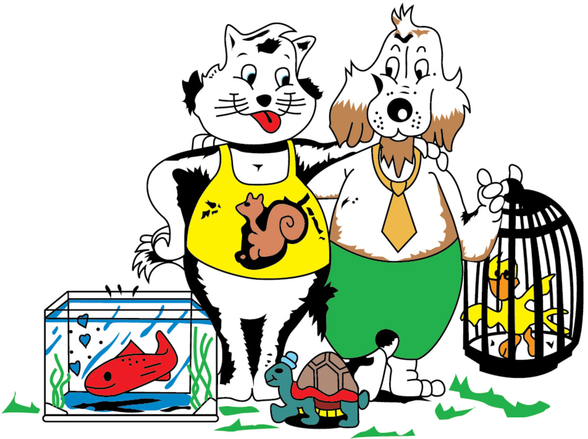

Gravellona Toce, dal 1989
Sala del cane
Toelettatura professionale per cani, acquari con pesci tropicali, ornitologia, alimenti e articoli. A vostra disposizione da quasi 50 anni di esperienza. In Corso Roma 139 dal 1989.

Cosa facciamo
- Toelettatura
- Bagno e tosatura professionale per cani.
- Acquari
- Vendita e assistenza: pesci tropicali, piante e accessori. Anche assistenza tecnica su acquari e attrezzature.
- Ornitologia
- Uccelli e roditori, gabbie, alimenti e accessori.
- Alimenti
- Alimenti per cani e gatti, anche dietetici, crocchette di varie marche.
- Articoli
- Gabbie, lettiere, guinzagli, collari e felpe Liu-Jo: articoli all'ultimo grido, con i modelli più recenti.
Orari di apertura
Il lunedì siamo aperti solo nel pomeriggio. Per la toelettatura conviene prenotare: basta una telefonata.
Telefono 0323 846239Lunedì—15:00 – 19:30
Martedì08:30 – 12:3015:00 – 19:30
Mercoledì08:30 – 12:3015:00 – 19:30
Giovedì08:30 – 12:3015:00 – 19:30
Venerdì08:30 – 12:3015:00 – 19:30
Sabato08:30 – 12:3015:00 – 19:30
Domenicachiusochiuso
Galleria
Chi siamo
A Gravellona Toce, in questo settore, siamo dal 1989. Oggi a lavorarci ci siamo noi, Lorena e Claudio: i clienti di allora sono gli stessi di adesso, e i loro figli portano qui i loro cani.
Conosco Lorena e Claudio da moltissimi anni. La loro gentilezza e professionalità sono insuperabili.
Alessandra M., recensione Google
Contatti
Il negozio
Corso Roma, 13928883 Gravellona Toce (VB) 0323 846239 info@saladelcane.com Apri la mappa